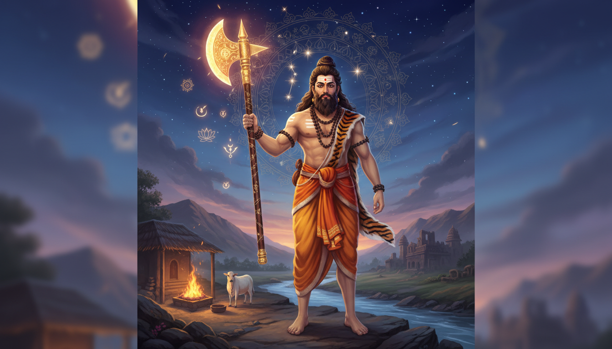

इस परंपरा के अधिकांश उपाय कुछ ऐसा माँगते हैं जो आपके बाहर का होता है — पहनने के लिए एक रत्न, दोहराने के लिए एक मंत्र, रखने के लिए एक व्रत, या किसी विशेष दिन मंदिर जाना।

परशुराम का तरीका कुछ ऐसा माँगता है जो आपके अंदर का है — और वही हिस्सा है जिसे हम आमतौर पर छोड़ देते हैं।
वे विष्णु के छठे अवतार थे, ऋषि जमदग्नि और रेणुका के पुत्र, और बाल्यावस्था में शिव से प्राप्त युद्ध-फरसा धारण करने वाले। उन्होंने पूरे भरत को इक्कीस बार चक्कर लगाकर हर अन्यायी राजा को मारा। और फिर — यह वह विवरण है जो लगभग कोई नहीं दोहराता — उन्होंने रुक गए, जब उनके पूर्वजों ने उनसे ऐसा कहा, और जो कुछ वे लेकर आए थे वह बाँट दिया, और तपस्या के लिए पहाड़ों में चले गए।
रुकना ही उसकी उपलब्धि थी। मारने में इक्कीस चक्कर लगे। रुकने में एक बातचीत लगी।
एक दूसरी उपलब्धि है जिसे वेदिक ज्योतिष के बाहर के लोगों ने लगभग नहीं देखा, और इसीलिए यह लेख आपके समय का सार्थक है। बृहत् पाराशर होर शास्त्र — ज्योतिष के उस महान् शास्त्रग्रन्थ में — विष्णु के दस अवतारों को नवग्रहों से जोड़ा गया है:
सूर्य से राम का अवतार, चन्द्र से कृष्ण का, मंगल से नरसिंह का, बुध से गौतम बुद्ध का, गुरु से वामन का, शुक्र से परशुराम का, शनि से कूर्म का, राहु से वराह का और केतु से मत्स्य का हुआ।
परशुराम शुक्र के अवतार हैं। शास्त्रीय उपाय-पद्धति में, जब आपका शुक्र पीड़ित हो — अस्तगत, नीच, राहु-केतु से ग्रस्त, अशुभ ग्रहों से दबा हुआ, अथवा छठ और आठवें भाव को एक साथ बिगाड़ रहा हो — तो आपके सामने जो देवता खड़ा होता है वह परशुराम है। कोई सामान्य "विष्णु" नहीं। एक निश्चित देवता, जिसके पास एक निश्चित फरसा है, एक निश्चित अग्नि है, एक निश्चित पंचांग है।
आगे तीन बातें स्पष्ट रूप से अलग-अलग रखी गई हैं, क्योंकि उन्हें मिला देना ईमानदारी नहीं होगा:
- पौराणिक और ऐतिहासिक वृत्त के अनुसार परशुराम के बारे में वास्तविक क्या कहा जाता है — पुराण, महाकाव्य, मूर्तिशास्त्र के ग्रन्थ, और वह तांत्रिक पाठ जिसका नाम उनका नाम है।
- शास्त्रीय ज्योतिष ने उनके लिए क्या निर्धारित किया है — ऊपर दी गई शुक्र-साम्य, और सप्तर्षि-सूत्र।
- उसके ऊपर बना आधुनिक, सुरक्षित संरेखण-सिद्धान्त — जिसे स्पष्ट रूप से आधुनिक बताया गया है, ताकि आप उस पर काम कर सकें और किसी को भी यह न दिखे कि वह शास्त्र है।
आरंभ करने से पहले एक बात
दो स्पष्ट सावधानियाँ।
अग्नि। नीचे दिए कुछ अभ्यासों में सचमुच की लौ होती है। स्थिर, अग्नि-अविरोधी सतह का प्रयोग करें, कभी ऐसे बंद कमरे में नहीं जहाँ कपड़ा या कागज़ आसपास हो, कभी बालकनी या सीढ़ियों पर नहीं, पानी और धातु का ढक्कन हाथ की पहुँच में रखें, और लौ को कभी अनुपस्थित न छोड़ें। यदि आप अग्नि को सुरक्षित रूप से नहीं रख सकते, तो उसके स्थान पर दीप या प्रदीप करें — अनुष्ठान का ढाँचा ही भार उठाता है, लौ का आकार नहीं।
परिधेय। यह एक भक्ति-और-उपाय-आधारित ढाँचा है, चिकित्सकीय, कानूनी अथवा वित्तीय सलाह का विकल्प नहीं, और यह योग्य वैदिक ज्योतिषी द्वारा आपकी वास्तविक कुंडली के विश्लेषण का विकल्प भी नहीं। यहाँ उद्धृत नवग्रह-अवतार सुमेल शास्त्रीय हैं और व्यक्तिगत कुंडली-विश्लेषण का स्थानापन्न नहीं हैं।
परशुराम कौन थे: ऋषि, अवतार, और भविष्य के सप्तर्षि
स्कन्द पुराण और भविष्य पुराण कहते हैं कि विष्णु ऋषि जमदग्नि और रेणुका के पुत्र के रूप में उत्पन्न हुए। ब्रह्माण्ड पुराण एक ऐसा विवरण जोड़ता है जो पहली बार देखने में कम महत्त्व का लगता है, पर वास्तव में सबसे महत्त्वपूर्ण है: पृथ्वी-देवी भूमि ने गाय का रूप धारण करके विष्णु से विनतीत की, कि राजाओं की क्रूरता से उसकी रक्षा की जाए। देवता ने परशुराम के रूप में ब्राह्मण वर्ण में अवतार लिया, पिता के आश्रम में पला-बढ़ा और वैदिक विद्या प्राप्त की।
बाल्यावस्था में उन्हें शिव ने परशु — फरसा — का वरदान दिया।
एक दूसरी जन्म-कथा वायु पुराण से है, और वह बहुत कुछ समझाती है। उसमें रेणुका दोनों रुद्र (शिव) और विष्णु के लिए किये गए यज्ञ-भोग को खाकर पुत्र को जन्म देती हैं, जिससे परशुराम में दोहरे गुण आते हैं — क्षत्रिय और ब्राह्मण। दोहरी विरासत, एक ही समय दो वंशों का। प्रतीकात्मक रूप से यह उस परंपरा में उनके कार्य का सबसे सटीक वर्णन है: वे विश्व की हिंसा और ऋषि-अनुशासन के बीच खड़े हैं। शंकर और तलवार। दोनों एक साथ।
वे भार्गव वंश में सूचीबद्ध हैं — च्यवन, शुक्र, शौनक, रिचिक, जमदग्नि और वाल्मीकि के साथ, वैदिक अग्नि-पुरोहितों की वह महान् पीढ़ी। महाभारत उन्हें भीष्म, द्रोण, रुक्मी और कर्ण के गुरु के रूप में अभिलिखित करता है। वे ऐसे संन्यासी नहीं थे जो सत्ता से बचते थे; उन्होंने उन्हें तैयार किया जो आगे सत्ता संभालने वाले थे, और इसीलिए उनकी कथा उस क्षण की है जब सत्ता को रख देना पड़ता है।
दो और उपाधियाँ, दोनों पुराणिक विश्वकोश से, याद रखने योग्य हैं:
- उन्हें चिरंजीवी — अमर — माना जाता है, और भविष्यवाणी है कि वे विष्णु के दसवें अवतार, कल्कि के गुरु होंगे।
- और वे अगले मन्वन्तर के सप्तर्षियों में गिने जाते हैं: दीप्तिमत्, गलव, परशुराम, कृप, द्रौणि (अथवा अश्वत्थाम), व्यास और ऋष्यशृंग।
दूसरी बात चुपचाप विलक्षण है। इस जीवन में परशुराम एक योद्धा-ऋषि हैं जिन्होंने भीष्म और द्रोण को प्रशिक्षित किया। अगले मन्वन्तर में वे उन सात में से एक हैं जो आकाश को धारे करते हैं।
और प्राचीन भारतीय खगोल में, सप्तर्षि केवल नामों की सूची नहीं हैं। महान् रथ (बिग डिपर, उर्सा मेजर) के सात तारे सप्त ऋषियों के नाम रखते हैं: वसिष्ठ, मरीचि, पुलस्त्य, पुलह, अत्रि, अङ्गिरस और क्रतु। ऋषि स्वयं एक तारा-समूह हैं। जब परंपरा कहती है कि कोई पुरुष सप्तर्षि बन जाएगा, तो वह वंश में स्थान की बात भी कह रही है और आकाश में स्थान की बात भी।
ज्योतिष का आधार: परशुराम ही आपके शुक्र के देवता हैं
यहाँ व्यावहारिक रूप से महत्त्वपूर्ण बात आती है, और इसीलिए यह लेख केवल किंवदंती का पुनरावृत्ति नहीं है।
ज्योतिष में ग्रह अमूर्त प्रकाश नहीं हैं। प्रत्येक एक नैतिक कार्य, सङ्केत-समूह, रंग, दिशा, मणि, दिन, मन्त्र, देवता और उपाय-विधि वहन करता है। शुक्र प्रेम, सौन्दर्य, विवाह, सुविधा, कला, वाहन, ऐसा धन जो संचित न होकर आता-जाता रहे, वीर्य और उर्वरता, छठ भाव, तथा आठवें भाव (दीर्घायु और छिपे विषय) का कारक है। यह दूसरे भाव का भी कारक है — संचित धन, कुटुंब, वाणी — और पाँचवें भाव की सृजनात्मक संतान का।
अब इसके आगे बृहत् पाराशर होर शास्त्र का सुमेल रखिए, और एक ठोस बात उभरती है:
जब शुक्र समस्या है, तो देवता परशुराम है।
- शुक्र अस्तगत — सूर्य के अत्यधिक निकट, निर्विष, उसके सङ्केत भूखे मर रहे हैं। ज्योतिष की परम्परा में उपाय शुक्र को आग से नहीं लड़ना है, बल्कि शुक्र की दूसरी शक्ति मज़बूत करना है: उसका पदार्थ, उसकी सहजता, उसकी वह क्षमता जो बिना खत्म हुए दे सके।
- शुक्र नीच — मीन राशि में, जहाँ शुक्र का अपना विस्तारित, जलीय, बलिदान-सम्मुख स्वभाव अति-विस्तृत हो जाता है और वह रूप नहीं धर पाता। नीच शुक्र का शास्त्रीय चित्र है — "बिना सीमा देने वाला": वह व्यक्ति जो सब कुछ देता है और कुछ नहीं रख पाता।
- शुक्र का राहु या केतु के साथ योग — बिना वस्तु की इच्छा, अथवा प्रिय वस्तु का नष्ट हो जाना। राहु चाहता है; केतु छोड़ता है। दोनों अतृप्त रहते हैं।
- शुक्र छठ या आठवें भाव में पीड़ित — सेवा और छिपे शत्रु। छठ-आठ का शुक्र कोण कुंडली का दक्षिण भाग है, जहाँ सम्बन्ध लेन-देन बन जाते हैं और भावों का ऋण चुकाना पड़ता है।
- शुक्र छठलोक — प्रेम कर्तव्य बन जाता है, अथवा स्वास्थ्य दूसरों की सेवा में ढल जाता है।
और परशुराम, उस ग्रह के निर्धारित देवता के रूप में, एक बहुत विशिष्ट उपाय-संकेत रखते हैं। देखिए उन्होंने वास्तव में क्या किया:
उन्होंने कुछ काटा। उन्होंने अन्याय की जड़ से एक शृंखला काट दी — इक्कीस बार, व्यवस्थित रूप से, हर रास्ते पर। उन्होंने राजाओं से वाद-विवाद नहीं किया। निवेदन नहीं किया। उन्होंने किया, और वह कार्य लक्षित था, व्यापक नहीं।
उन्होंने पूर्वजों के कहने पर रोक दिया।
उन्होंने जो लिया था वह बाँट दिया — जीती गई भूमि ब्राह्मणों को।
उन्होंने तपस्या के लिए महेन्द्र पर्वत पर प्रवास किया।
राम ने शरंग धनुष पर प्रसर लगाया तब उन्हें अपनी दैवीय शक्ति से वंचित होना पड़ा, और उन्होंने उसे स्वीकार किया, अपने पर्वत लौटने की अनुमति माँगी ताकि वे योग का अभ्यास कर सकें और पुण्य बढ़ा सकें, और फिर राम की परिक्रमा की।
उन्होंने बाद के लोगों को शिक्षा दी: भीष्म, द्रोण, रुक्मी, कर्ण।
इसे पीड़ित शुक्र के उपाय के रूप में पढ़िए, तो यह एक सटीक और असामान्य चिकित्सा है। शुक्र का रोग है उलझन — ऐसा जुड़ाव जिसे कोई नहीं तोड़ पाता, ऐसे सम्बन्ध जो इसलिए बने रहते हैं क्योंकि कोई उन्हें काटता नहीं, ऐसी उदारता जो रुक नहीं सकती, ऐसी इच्छा जो समाप्त नहीं होती। परशुराम का उपाय अंधेरे में ध्यान नहीं है। वह है: अन्यायपूर्ण बंधन पहचानो, उसे साफ़-सुथरे काटो, हानि सहो, और फिर छुटा हुआ चीज़ अपने पास रखने के बजाय बाँट दो।
और ध्यान दीजिए फरसा कहाँ से आया था। वह शिव से मिला था — शुभ के भीतर का विनाशक। आवेश का नहीं, उपकरण। उस व्यक्ति को दिया गया जो उसे ठीक उतनी ही अवधि तक धारण करेगा जितनी आवश्यकता थी।
भार्गव अग्नि: अग्निहोत्र और सहस्र-वर्षीय यज्ञ
परशुराम भार्गव वंश के हैं, और भार्गव अग्नि-पुरोहित हैं। उनके पास उपलब्ध अनुष्ठान-सामग्री वैदिक गृह-अग्नि-कर्म है, अग्निहोत्र।
अग्निहोत्र समुद्र घी की हवन वैदिक अग्नि में है, जो दिन में दो बार — सूर्योदय के ठीक पहले या बाद, और सूर्यास्त के बाद या प्रथम नक्षत्र के दिखने पर — किया जाता है। ऐतिहासिक वैदिक धर्म में यह सबसे सरल सार्वजनिक अनुष्ठान था, और प्रत्येक ब्राह्मण तथा वैश्य कुल के मुखिया पर इसे दिन में दो बार करने की आवश्यकता थी। अधिवर्तक को अग्निहोत्री कहा जाता है।
दो विवरण हमारे विषय के लिए असाधारण भार वहन करते हैं।
पहला, समय। अनुष्ठान सूर्य के वास्तविक गमन-पथ से बँधा है — सूर्योदय का ठीक क्षण और सूर्यास्त का ठीक क्षण। यह प्रतीकात्मक "सूर्य-संबंध" नहीं है। यह एक ग्रह-संरेखण-क्रियाविधि है, दिन में दो बार, प्रतिदिन, सदा के लिए। परंपरा में शुद्ध कर्तव्य के रूप में किए गए अनुष्ठान को नित्य कहा जाता है; विशेष उद्देश्य से किया गया अनुष्ठान काम्य है। परशुराम के कार्य स्पष्टतः काम्य श्रेणी में हैं — एक निश्चित प्रयोजन के लिए प्रयुक्त अग्नि।
दूसरा, अग्नि की प्रार्थना। जब अनुष्ठान पूर्ण होता है, तो अधिवर्तक बचे हुए जल का चूम करता है, मन्त्र पढ़ता है — "ऋत से मैंने सत्य को प्राप्त किया" — और अपने सिर पर जल डालता है। यह परशुराम के पूरे चरित्र का सार एक पंक्ति में है। वह अन्याय को काटने के लिए फरसे के साथ निकला था, और अंत में उसे सत्य पर लौटना पड़ा।
और इससे भी गहरी एक परत है। ब्राह्मण अग्निहोत्र की उत्पत्ति के अनेक वृत्त देते हैं। उनमें से एक में यह प्रजापति तथा अन्य देवताओं द्वारा दैवीय शक्ति प्राप्त करने हेतु किये गए सहस्र-वर्षीय यज्ञ का संक्षिप्त रूप है। इसे परशुराम के अपने इक्कीस चक्करों के सामने, अगले मन्वन्तर में सप्तर्षि बनने के साथ, तथा उनके नाम वाले पाठ की सहस्र-वर्षीय कल्प के साथ मिलाकर पढ़िए — एक प्रतिरूप उभरता है। अग्नि-अनुष्ठान समय की विशाल अवधि का संपीड़ित रूप है। यही ठीक वह है जो बीस चक्करों में तय किए गए जीवन की नाप में है।
अग्नि के व्यापक ढाँचे के लिए: होम विशेष अवसरों का अग्नि-अनुष्ठान है, और उसकी एक निश्चित आकृति है. पहला चरण अनुष्ठान-परिवेश का निर्माण है, मण्डप; अंतिम चरण उसका विघटन। वेदी और मण्डप को पुरोहित द्वारा अभिषिक्त किया जाता है, जिससे मन्त्र-पाठ के साथ एक पवित्र अवधि बनता है। यज्ञकर्ता प्रवेश करता है, जल से प्रतीकात्मक रूप से शुद्ध होता है, अनुष्ठान में सम्मिलित होता है, देवताओं को आमंत्रित किया जाता है, प्रार्थनाएँ पढ़ी जाती हैं, शंख बजाया जाता है। फिर परिवेश हटा दिया जाता है। निर्माण और अविघटन — दोनों ही अनुष्ठान के भाग हैं।
अग्निहोम — केरल के उत्तर मलाबार की क्षेत्रीय विधि — इनमें सबसे अल्पज्ञात है और योद्धा-ऋषि के लिए सबसे प्रासंगिक भी। मानक वैदिक अग्निहोत्र से भिन्न, जिसमें मुख्यतः दैनिक हवन सम्मिलित होता है, अग्निहोम एक *एकबारगी, कठोर योद्धा-दक्षिणा-प्रसारण अनुष्ठान है, जो एक योद्धा (चेकोन) को दैवीय अथवा अर्ध-दैवीय स्थिति (दिव्यन) में प्रवेश कराता है*, और इसमें पूणूल, योगपट्टम् तथा मुद्रा प्राप्त होते हैं।
इसे पुनः पढ़िए: एक अग्नि-अनुष्ठान जो एक योद्धा को दिव्य बनाता है, एक बार, स्थायी रूप से, एक ही उत्तर-संधि में। परशुराम ऋषि और योद्धा दोनों थे — एक ब्राह्मण जिसने युद्ध-फरसा धारण किया और भीष्म व द्रोण को युद्ध-कला सिखाई। इस परंपरा के सभी व्यक्तियों में अग्निहोम उनका सबसे स्वाभाविक अधिकार है। यह अनुष्ठान इस प्रश्न का उत्तर है: जिसने न्याय के लिए हिंसा की, वह हिंसा करने वाला व्यक्ति न रहकर क्या बने? उत्तर: एक उचित अग्नि, ठीक से, एक बार, और फिर कभी नहीं।
इक्कीस विनाश: क्रोध और उसका उपाय
आइए यह सटीक रूप से देख लें, क्योंकि सदियों से इस कथा को नरम कर दिया गया है, और नरम किया हुआ रूप ही सबसे कम उपयोगी हिस्सा है।
हैहय वंश के राजा कार्तवीर्य अर्जुन, जिसका उपनाम सहस्रबाहु — सहस्र भुजाओं वाला — उसने अपने पिता के आश्रम में अपनी गाय बलातू से ले गई, "पवित्र अभिहार की दुग्ध-गाय का बछड़ा" लेकर चला गया। जब जमदग्नि ने गाय वापस माँगने की अनुमति लाई, तो राजा ने उस पर मुट्ठी मारी और उसे मार दिया।
परशुराम ने प्रतिज्ञा की और बच्चों की अन्यायपूर्ण पीड़ा समाप्त करने का संकल्प लिया। उन्होंने अर्जुन को मारा — शिव से प्राप्त युद्ध-फरसे से — पूरे कुल को समाप्त किया, और महाभारत के अनुसार क्षत्रियों का इक्कीस पीढ़ियों तक सामूहिक विनाश किया। दशावतार साहित्य में सुरक्षित परंपरा में उन्होंने संकल्प लिया कि वे संपूर्ण पृथ्वी पर इक्कीस बार भ्रमण करेंगे और प्रत्येक क्षत्रिय राजा की हत्या करेंगे, पाँच झीलों को उनके रक्त से भरेंगे।
वे असाधारण सक्षम थे। कार्तवीर्य अर्जुन ने सत्रह अक्षौहिणियाँ परशुराम के विरुद्ध भेजीं, जबकि वह पैदल था; परशुराम ने राजा के धनुष तोड़े, उसके घोड़े और सारथी को मारा, उसके रथ को ही अपने बाणों से नष्ट कर दिया, और उसकी सहस्र भुजाएँ काट दीं। कार्तवीर्य ने पहले लंका पर आक्रमण कर रावण को बंदी बना लिया था; परशुराम ने उसे उसके महल पर मारा और रावण मुक्त करा दिया गया।
और फिर वह मोड़। महाभारत में, जब भीष्म ने घातक शस्त्र का प्रयोग करने का निश्चय किया, तो दिव्य ऋषि नारद तथा देवताओं के अनुरोध पर परशुराम ने संघर्ष समाप्त कर दिया और युद्ध को खीरा-बराबर घोषित किया गया। जब उनके भार्गव पूर्वजों ने उन्हें शेष राजाओं पर दया करने को कहा, तो उन्होंने अपना विनाश रोक दिया, जीती गई भूमि ब्राह्मणों में बाँट दी, और महेन्द्रगिरि पर्वत पर तपस्या शुरू की।
परशुराम की कथाओं पर साहित्यिक अध्ययन असामान्य रूप से स्पष्ट है कि वे वास्तव में क्या दिखाती हैं। टॉमस ई. डोनाल्डसन की जैन कला एवं प्रतिमाशास्त्र पर अध्ययन में लिखा है कि *परशुराम की कथाएँ अपने हिंसा, प्रतिशोध के चक्रों, क्रोध की प्रवृत्ति, क्रोध की अनुपयुक्तता और प्रायश्चित पर विवाद के लिए प्रसिद्ध हैं। और अवतार के लोक-पाठ परंपरा में यह उतनी ही स्पष्टता से कहा गया है: परशुराम दया के कठोर और अटल पक्ष को प्रतीकित करते हैं, जहाँ उन्हें सृष्टि* के कल्याण के लिए कठोर होना पड़ता है।
यही तो पूरा उपाय है, परंपरा स्वयं के कथन में: जो दया नहीं झुकती। नरमी नहीं।निष्क्रियता नहीं। पूर्णतः अनुचित बुराई के प्रति जिसमें कोई झुकाव नहीं है — और फिर भी एक निवेदन पर रुक जाने की क्षमता — और फिर प्राप्ति बाँट देना।
इसे पीड़ित शुक्र के साथ रखिए, तो क्रियाविधि दिखाई देती है। क्रोध ही मारक ग्रहों का शास्त्रीय दोष है। मंगल, और राहु-केतु का अक्ष, और शनि का दीर्घकालिक दबाव — तीनों ही पहली और स्वतःचालित प्रतिक्रिया के रूप में प्रतिशोध की ओर धकेलते हैं। शुक्र की छाया अलग है पर सन्निहित: वह वह उलझन है जिसे प्रतिशोध बनाए रखता है। वह असंतोष जो तब तक नहीं छोड़ा जाता जब तक उसे छोड़ने का अर्थ उसे खो देना न हो।
परशुराम की विधि में चार क्रम हैं, इसी क्रम में:
- एक बार, साफ़, जड़ पर काटिए। व्यक्ति को नहीं। बंधन को। वह व्यवस्था जिसने बार-बार अन्याय को संभव बनाया।
- स्वीकृति का पूरा व्यय सहिए। आपके चारों ओर के सब मानेंगे कि आपने अतिरिक्त किया। उन्होंने फिर भी ऐसा किया — इक्कीस बार।
- पूर्वज कहें तब रुकिए। तब नहीं जब आपको रुकने का मन करे — जब जिसने आपको अधिकार दिया उसने कहा कि काम पूरा हुआ। पुराने प्राधिकार की पुनःपरीक्षा।
- नतीजा बाँट दीजिए। भूमि, धन, कार्य का फल। परशुराम ने अपनी जीती भूमि ब्राह्मणों को दी। ऊर्जा कहीं और जानी चाहिए, वापस आपके पास नहीं — वरना वही अगला असंतोष बन जाती है।
और एक और, जो इसका गुप्त हृदय है:
- पहाड़ पर चले जाइए। कर्म के बाद प्रायश्चित। प्रायश्चित के बाद, पर्वत योग और पुण्य का स्थान बन जाता है। भागवत पुराण (2.3.47) उनके निवास को विशेष रूप से महेन्द्र पर्वत में रखता है। राम के उसे परीक्षा में लेने के समय भी वह वहीं था।
गुप्त मूल: परशुराम कल्पसूत्र
यदि आप सचमुच कम जानी हुई सामग्री चाहते हैं, तो यही है — और यह परंपरा के भीतर भी उतनी अच्छी तरह से ज्ञात नहीं है।
परशुराम कल्पसूत्र एक शाक्त आगम है — शाक्त परंपरा का अनुष्ठान-पुस्तिका — और कौल परंपरा को समर्पित श्री विद्या-प्रथाओं पर एक हिन्दू पाठ। इसकी रचना परंपरागत रूप से परशुराम को ही दी गई है, विष्णु के छठे अवतार को, और दत्तात्रेय का शिष्य।
इसकी संरचना जानने योग्य है, क्योंकि यह शीर्षक को समझाती है। इस पाठ की उत्पत्ति दत्तात्रेय संहिता में है, जिसमें दस हजार सूक्त थे। दत्तात्रेय के निर्देश पर परशुराम ने संहिता को पचास भागों में छह हजार सूक्तों तक संक्षिप्त किया। इसे परशुराम के शिष्य सुमेध ने संकलित किया। तो कल्पसूत्र संरचनात्मक रूप से एक संपीड़न है — बहुत बड़े शिक्षा-समूह को कार्यशील रूप में लाया गया। यही वही हस्त-क्रिया है जो अग्निहोत्र सहस्र-वर्षीय यज्ञ को संपीड़ित करता है।
इसकी विषय-वस्तु वहीं असली रूप से गोपनीय है। कहा जाता है कि परशुराम ने आंतरिक इंद्रियों और कुण्डलिनी को जागाने वाले संकेतों तथा मन्त्रों के रहस्य प्रकट किये। यह पाठ श्री विद्या के उपासकों के लिए पवित्र आगम है, जो देवी त्रिपुरा सुन्दरी (ललिता) की पूजा करते हैं, और जिसे आदि पराशक्ति की प्रकृति माना जाता है। इसका उपयोग गणेश, बाला त्रिपुरासुन्दरी, मातंगी और वराही की पूजा में भी किया जाता है।
दो संरचनात्मक सिद्धान्त स्पष्ट रूप से वर्णित हैं:
- ऊर्ध्वम्नाय — "ऊपर की परंपरा" — जिसमें परशुराम गूढ़ पक्ष के महत्त्व पर बल देते हैं, यह दिखाते हुए कि बाह्य अनुष्ठानों को ठीक से संक्षिप्त कैसे किया जाए: जप, पूजा, मुद्राएँ, प्राणायाम — सब भीतर खींचे जाएँ। बाहरी क्रिया नहीं छोड़ी जाती। वह संपीड़ित होकर ही भीतरी क्रिया बन जाती है।
- और तांत्रों का वह सामान्य सिद्धान्त जो मूलतः गूढ़ हैं: वे प्रतीकात्मक प्रतिमा, यन्त्र, तथा कुण्डलिनी शक्ति को जगाने वाले मन्त्र के पूजन-द्वारा आन्तरिक अभ्यासों से संबंधित हैं।
यह परंपरा का दूसरा महान् संपीड़न है, और यह पहले के ठीक बगल में बैठता है। अग्निहोत्र सहस्र वर्ष को दो मिनट में समेटता है। कल्पसूत्र दस हजार सूक्तों को पचास भागों में छह हजार में समेटता है। परशुराम जो आदर्श बार-बार दोहराते हैं वह है: संपीड़न — समय, बल और शिक्षा की विशालता को ऐसा संपीड़ित करना कि एक मनुष्य वहन कर सके।
ध्यान दीजिए कल्पसूत्र और वराह-साहित्य के बीच का पारिवारिक साम्य भी। दोनों एक ही विष्णु-अवतार-वंश को समर्पित हैं, और बृहत् पाराशर होर शास्त्र में दोनों को ग्रह सौंपे गए हैं। वराह — सूअर अवतार, राहु का निर्धारित देवता — को यज्ञ-वराह, "यज्ञ का सूअर" कहा गया है, और ब्रह्माण्ड पुराण वर्णन करता है कि सूअर-रूप वैदिक यज्ञों से निर्मित है, तथा उसके शरीर-अंग यज्ञ के विभिन्न उपकरणों और भागीदारों की तुलना से वर्णित हैं। और वराह की शक्ति मातृका महामाता वराही हैं, जिन्हें सूअर-शिरस्क वर्णित किया जाता है — और वराही तो ठीक वही देवी हैं जिनकी पूजा परशुराम कल्पसूत्र सेवा करता है।
तो सूत्र यह है: परशुराम (शुक्र) → वराह (राहु) → वराही। फरसा-धारी का सूअर-जन्मज और उसकी सूअर-शीर्षा शक्ति। सूअर-अवतार की शक्ति को फरसा-अवतार के पाठ में पूजा जाता है। यदि आप राहु-केतु के आसपास उपाय-कार्य कर रहे हैं — और ज्योतिष में यही अक्ष कालसर्प तथा उस कर्मिक उलझन का प्रमुख स्थान है जो हर दूसरे उपाय को रोक देती है — तो परंपरा आपका ध्यान यहीं खींचती है।
परशुराम प्रताप। उनके नाम वाला दूसरा तांत्रिक पाठ, परशुराम प्रताप, जयंती के अनुष्ठानों में कल्पसूत्र के साथ ही अनुयाथियों द्वारा पाठ किया जाता है।
ग्रह-पंचांग: काम कब किया जाए
इस परंपरा में उपाय-अनुष्ठान काल-निर्भर नहीं है। यह पंचांग-बद्ध है। परशुराम के विशिष्ट दिन हैं।
अक्षय तृतीया — फरसे का जन्म
परशुराम जयंती का पालन अक्षय तृतीया को होता है — हिन्दू मास वैशाख की शुक्ल पक्ष की तृतीया तिथि (तीसरा चन्द्र-दिवस)। माना जाता है कि परशुराम का जन्म इस दिन प्रदोष के अवसर पर हुआ। हिन्दू परंपरा में अक्षय तृतीया को परशुराम, विष्णु के छठे अवतार का जन्म-दिन माना जाता है; जो लोग इसे उनके सम्मान में मनाते हैं, वे कभी-कभी इस उत्सव को परशुराम जयंती कहते हैं। ("अक्षय" — अक्षय, अतृप्त, जो कभी न खत्म हो।)
अनुष्ठान विशिष्ट हैं और अपनाने योग्य:
- भक्त इस दिन व्रत करते हैं, जो अनुशासन का प्रतीक है।
- भजन, कीर्तन और पाठ आयोजित किए जाते हैं।
- विभिन्न परशुराम मंदिरों में पूजा और हवन किए जाते हैं।
- भक्तों को भंडार प्रसाद बाँटा जाता है।
- शोभा यात्रा और कलश यात्रा — जलूसे — अलग-अलग स्थानों से अलग-अलग नगरों में निकाली जाती हैं, जिसमें बड़ी संख्या में भागीदार होते हैं। मोकामा के पर्शुराम मंदिर में महान् कलश यात्रा को बिहार सरकार ने राज्य-उत्सव का दर्जा दिया है। हिमाचल प्रदेश में यह सार्वजनिक अवकाश है।
- तांत्रिक पाठ — परशुराम कल्पसूत्र और परशुराम प्रताप — अनुयाथियों द्वारा पाठ किए जाते हैं।
इसकी आकृति पर ध्यान दीजिए: एक व्रत (भूख का त्याग), एक अग्नि (हवन), एक सार्वजनिक जलूस (यात्रा), और शास्त्र-पाठ (कल्पसूत्र और प्रताप)। परशुराम के जन्मदिन पर उनके जीवन के ठीक वही चार उपकरण रखे गए हैं: तप, अग्नि, लोगों के बीच चलना, और गूढ़ पाठ।
मेष संक्रांति — नववर्ष और सूर्य का मेष में प्रवेश
संक्रांति भारतीय खगोल में सूर्य के एक राशि से दूसरे राशि में स्थानांतरण को कहते है। पारंपरिक हिन्दू पंचांग चन्द्र-स्थितियों पर आधारित है; संक्रांति एक सौर घटना है। सौर वर्ष में बारह संक्रांति होती हैं, और चार श्रेणियों में बँटी हैं: आयन (संक्रांति/विषुव), विशुव, विष्णुपदी और षड्शितिमुखी।
मेष संक्रांति पारंपरिक हिन्दू सौर पंचांग में नववर्ष के आरंभ को चिह्नित करता है — वह दिन जब सूर्य नक्षत्रीय मेष राशि में प्रवेश करता है। क्षेत्रीय नववर्ष उत्सव उसी दिन के आसपास हैं: केरल में विषु, तमिलनाडु में पुथंडु, तुलु नाडु में बिसु पर्व, पंजाब क्षेत्र में वैसाखी, ओडिशा में पाण संक्रांति, मिथिला में जुदे शीतल, और भोजपुरी में सतुआन। अगले दिन: बंगाल में पोहेला बैशाख, असम में बोहाग बिहु, श्रीलंका में अवुरुद्धु, और दक्षिण-पूर्व एशिया में सोंगक्रान।
यह सूर्य के अपने वर्ष का मोड़ भी है। मेष संक्रांति छह माह के उत्तरायण की समाप्ति और दक्षिणायण के आरंभ को चिह्नित करता है, और दक्षिणायण मकर संक्रांति पर समाप्त होता है — जब सूर्य फिर उत्तर की ओर चलना शुरू करता है।
शुक्र के उपाय के लिए यह क्यों मायने रखता है। मेष का राशि-राजा मंगल है, और मेष राशि-चक्र का पहला है — आरंभ, प्रवेश, द्वार। संक्रांति पर किया गया उपाय उस क्षण पर किया जाता है जब सौर वर्ष पुनः आरंभ हो रहा हो। यह किसी भी "बंधन काटो और नए सिरे से शुरू करो" कार्य के लिए ज्योतिषीय रूप से सबसे शुद्ध समय है, क्योंकि पंचांग स्वयं वह काट-छाँट कर रहा होता है। और बृहत् पाराशर होर शास्त्र के अपने ढाँचे में परशुराम नववर्ष के पहले राशि के देवता हैं (शुक्र → मेष के राजा का अधिकार क्षेत्र वही है जहाँ शुक्र के सङ्केत सबसे स्पष्ट रूप से दिखते हैं: मेष से छठा भाव एकादश भाव है — लाभ, आय, इच्छाओं की पूर्ति — और मेष से आठवाँ भाव तृतीय भाव है — साहस, प्रयास, अवरोध का भेदन)।
सीधे पढ़िए: मेष से शुक्र एकादश और तृतीय भावों का स्वामी है। लाभ और प्रयास। जो आप चाहते था वह पाना और जो रास्ते में है उसे हटाना।
पूर्णिमा-सूत्र
पूर्ण चन्द्र-दिवसों का वही वज़न है। पूर्णिमा वह काल है जब चन्द्र सूर्य और पृथ्वी के साथ तीनों के परस्पर योग (सूर्य-ग्रह-पृथ्वी त्रयी) में होता है, और उसमें सन्तान वाली स्त्रियाँ विभिन्न अनुष्ठान करती हैं। इसे व्यास पूर्णिमा भी कहा जाता है, व्यास के नाम पर, और गुरु पूर्णिमा के रूप में — जब व्यास, जो ऋषि परशार और मछुआरे की पुत्री सत्यवती के पुत्र थे, ने वेदों को चार भागों में बाँटा। गुरु पूर्णिमा से चार मास का चातुरमास्य व्रत भी आरंभ होता है, और महाभारत में भीष्म के भीष-प्लवन व्रत का आरंभ आषाढ़ पूर्णिमा को हुआ माना जाता है।
परशुराम की अपनी कथा से स्पष्ट सामान्यता है जिसे परंपरा से छूटती नहीं: भीष्म उनके शिष्य थे, और भीष्म का प्रसिद्ध व्रत स्वयं एक परशुराम-सन्निहित बंधन-कर्म था। शिष्य ने प्रसिद्ध बंधन-व्रत किया; गुरु ने प्रसिद्ध इक्कीस-चक्कर-व्रत किया और फिर दया के कारण उसे तोड़ दिया।
एक व्यावहारिक वार्षिक पंचांग
| अवधि | आधार | किसके लिए |
|---|---|---|
| मेष संक्रांति | सूर्य का मेष में प्रवेश | बंधन काटना / नववर्ष में गुरु-शुक्र या शुक्र-स्थित वाला नया आरंभ |
| अक्षय तृतीया (वैशाख शुक्ल तृतीया) | परशुराम का जन्म | पूर्ण परशुराम-अनुष्ठान: व्रत, हवन, यात्रा, कल्पसूत्र पाठ |
| पूर्णिमा / गुरु पूर्णिमा | व्यास पूर्णिमा, चातुरमास्य आरंभ | गुरु-शिष्य-कृपा, व्रत-अनुशासन, गुरु पूजा |
| शुक्रवार | शुक्र का अपना दिन | नीचे दिया व्यक्तिगत, सस्ता शुक्र-संरेखण |
परशुराम-प्रोटोकॉल
यह आधुनिक संरेखण-सिद्धान्त है — स्पष्ट रूप से ऐसा बताया गया है। यह ऐतिहासिक अभिलेख के अपने उपकरणों का प्रयोग करता है: अग्नि, मन्त्र, प्रतिमा, जलूस, वितरण और विलगन। यह श्रौत-विधि का दावा नहीं करता। जहाँ यह ज्योतिष-सुमेलों का प्रयोग करता है, वह मानक सुमेल हैं। जहाँ यह आगे बढ़ता है, वहाँ यह बताता है।
चरण 1 — अन्यायपूर्ण बंधन पहचानिए (आत्म-परीक्षण)
लिखिए — विशिष्ट रूप से और नाम के साथ — वह स्थिति जिसे आप "उलझन" कहते हैं। कोई व्यक्ति नहीं। एक बंधन: एक व्यवस्था, एक कर्तव्य, देने की एक आदत, किसी सम्बन्ध का अशाषित समझौता, एक नौकरी, भाव का एक ऋण।
फिर परशुराम का परीक्षण लगाइए: क्या इसके चलते रहने से किसी को हानि हो रही है? यदि नहीं, तो यह फरसे का काम नहीं है। यदि हाँ, और आपने इसे सहन किया है, तो आप इसे पहले ही पहचान चुके हैं।
यह कल्पसूत्र का पहला कदम निदान के रूप में लागू: बाह्य को भीतर समेटिए। उलझन आपकी वाणी और ध्यान में आपके पंचांग से बहुत पहले खड़ी हो जाती है।
चरण 2 — वह शुक्र-संरेखण जिसमें कुछ खर्च नहीं होता (शुक्रवार)
शुक्र का दिन शुक्रवार है। शुक्र का रंग श्वेत और क्रीम है; इसका पदार्थ घी, दूध, सफ़ेद चावल और शक्कर है; इसका शास्त्रीय भोग अग्नि में घी की हवन है।
एक न्यूनतम शुक्रवार-अनुष्ठान:
- सूर्योदय से पहले उठिए। एक छोटी लौ या दीप जलाइए।
- थोड़ा घी हवन कीजिए — अथवा यदि आप अग्नि न रखें, तो दीप में घी की एक बूंद।
- शुक्र मन्त्र का पाठ कीजिए। शुक्र का शास्त्रीय बीज मन्त्र ॐ श्रीं शुक्राय नमः है, जिसे परंपरागत रूप से शुक्रवार को 108 बार पढ़ा जाता है।
- अग्निहोत्र की अपनी समापन-पंक्ति के साथ समाप्त कीजिए: "ऋत से मैंने सत्य को प्राप्त किया।"
- सूर्य के पूर्णतः उदित होने से पहले भोजन न लें।
यह होम का हल्का विकल्प नहीं है। यह उसी ध्यान का नित्य रूप है: अग्नि सूर्य के वास्तविक संक्रमण से बंधा, दिन में दो बार, जैसे ऐतिहासिक वैदिक धर्म में प्रत्येक गृहस्थ के लिए था।
शुक्रवार का श्वेत-संबंध: एक श्वेत या क्रीम रंग की वस्तु पहनिए। एक श्वेत वस्तु — वस्त्र, कपड़ा, चीनी, चावल या दूध — ऐसे व्यक्ति को दान कीजिए जिसे इसकी आशा नहीं है और जो इसके बदले कुछ नहीं चाहता। उसे कारण मत बताइए।
चरण 3 — कल्पसूत्र-संपीड़न (अंतरिक्त अभ्यास)
यह गूढ़ चरण है, और इसे चरण 2 के स्वतः बनने के बाद ही करना चाहिए, उससे पहले कभी नहीं।
एक छोटा-सा अभ्यास लीजिए — आपका जप, आपकी पूजा, आपका प्राणायाम — और उसे संपीड़ित कीजिए। लंबा नहीं, छोटा। पहले से अधिक बार नहीं, कम।
- जप: एक मन्त्र, आपकी आदत से कम बार। कल्पसूत्र का सिद्धान्त यह है कि अनुष्ठान को तब तक संपीड़ित करना चाहिए जब तक वह भीतरी क्रिया न बन जाए। गुणवत्ता-ध्यान की मात्रा से अधिक।
- मुद्रा: यदि आप पहले से मुद्रा का प्रयोग करते हैं, तो मन्त्र चलने के दौरान उसे धारण कीजिए। यदि नहीं, तो सबसे सरल है चिन-मुद्रा और ध्यान अज्ञा-बिन्दु पर।
- प्राणायाम: नाड़ी-शोधन, क्रम से नासिका-द्वार का प्राणायाम, ध्यान गिनती पर नहीं, प्राण पर।
- यन्त्र: सामने एक ही प्रतिमा रखिए। फरसा नहीं — यन्तर रूप, यदि आपके पास हो; यदि नहीं, तो एक साधारण, शुद्ध श्री यन्त्र बनाकर उसी के सामने बैठिए। श्री यन्त्र उसी ललिता/त्रिपुरा सुन्दरी का ज्यामितीय शरीर है जो आदि पराशक्ति हैं, और कल्पसूत्र की अधिपत्ति देवी यही हैं।
- मन्त्र: वही प्रयोग कीजिए जो आपकी परंपरा या आपके साधक ने दिया हो। यदि कोई नहीं, तो ऊपर वाला शुक्र मन्त्र, या प्राण के साथ एक सरल ॐ।
फिर, संपीड़न के अंत में, वह एक काम कीजिए जिसका नाम कल्पसूत्र है: एक संकल्प, एक बार कहा हुआ और सँभाला हुआ। संस्कृत मूल है कल्प — संकल्प, इच्छा, मन का परियोजित रूप। कल्प-सूत्र अर्थात् संकल्प-शास्त्र। कहिए कि आप क्या काट रहे हैं, किससे, और किस साधन से। फिर उसके बारे में बोलना बंद कीजिए।
चरण 4 — फरसा, साल में एक बार (अक्षय तृतीया)
अक्षय तृतीया को, और केवल तब, बाहरी कार्य कीजिए। यह ऐच्छिक अनुष्ठान-व्यस्तता नहीं है; क्रम ही क्रियाविधि है।
- व्रत। परशुराम के अनुशासन का एक दिन। हल्का भोजन करिए; कठोर परंपरा में, पूर्ण व्रत। यदि व्रत आपके लिए सुरक्षित नहीं, तो किसी चुने हुए भोजन से और उस विषय के बारे में बोलने से व्रत कीजिए।
- हवन अथवा होम। यदि आपके पास पुरोहित और उचित वेदी है, तो होम करा लीजिए। यदि आप स्वयं छोटे वर्गाकार अग्नि-कुंड से कर रहे हैं, तो सरल और सुरक्षित रखिए: घी, दूर्वा-घास, और अग्नि सूर्योदय या सूर्यास्त के ठीक समय से बंधा। परशुराम जयंती का पर्यवर्तन एक हवन का दिन है — यही वास्तव में निर्धारित है।
- कल्पसूत्र का पाठ। कोई भी अंश, संस्कृत में यदि आप पढ़ सकें, अनुवाद में यदि नहीं। यह श्री विद्या परंपरा का तांत्रिक पाठ है और इस उत्सव में भक्तों द्वारा पाठा जाता है।
- यात्रा। बाहर जाइए। मंदिर तक, नदी तक, उस स्थान तक जहाँ आप जो काट रहे हैं वह वास्तव में रहता है। परशुराम जयंती में जलूसे निकाले जाते हैं जिनमें बड़ी संख्या में भागीदार होते हैं। जलूसे उस समय के लिए हैं जब एक निजी निर्णय को गवाहों की आवश्यकता हो।
- भंडार। भंडार प्रसाद बाँटिए — बिना किसी औपचारिकता के, बिना सम्मान-प्रदर्श के, सीधे उन लोगों को भोजन जो भूखे हैं, और जिससे प्राप्तकर्ता को कृतज्ञ महसूस करने की बाध्यता न हो। परशुराम ने भूमि बाँट दी। छोटी शुरुआत कीजिए और साफ़-सुथरी।
चरण 5 — प्रायश्चित, और पर्वत
कर्म के बाद, अलग हो जाइए। यही वह हिस्सा है जो सब छोड़ देते हैं, और जिसके बारे में स्रोत सबसे ज़ोरदार हैं।
परशुराम घर नहीं लौटे। वे महेन्द्र पर्वत पर गए और तपस्या की, और भागवत पुराण उनके निवास को विशेष रूप से वहीं रखता है। वायु पुराण की दोहरी विरासत — शिव और विष्णु, विनाशक और रक्षक — इसका निदान है, यदि आप यह छोड़ देते हैं: फरसा हाथ में ही रह जाता है।
आधुनिक अनुपात:
- सात दिन इस बात के बारे में चुप रहिए — उस व्यक्ति या स्थिति के बारे में नहीं, जिसे आपने काटा। विषय के बारे में चुप रहिए, क्योंकि उसकी चर्चा उसे फिर से जोड़ देती है।
- परिणाम पर कोई दावा नहीं। परशुराम ने धन्यवाद का प्रार्थना नहीं किया। उन्होंने भूमि बाँटी और पर्वत की ओर चले गए।
- एक ऐसी चीज़ दीजिए जो आप रखने वाले थे। धन, उधार, कोई वस्तु, कोई दावा, कोई बहस।
- एक निश्चित दैनिक आसन। पर्वत किसी सुंदर छुट्टी का रूपक नहीं है। यह एक निश्चित, दोहराया जाने वाला, साधारण स्थान है जहाँ अभ्यास होता है। हर दिन, वही समय, वही आसन, वही अग्नि।
चरण 6 — सप्तर्षि-आसन
अंतिम और सबसे असामान्य तत्व, और वही जो पूरी बात को आकाश से जोड़ता है।
परशुराम अगले मन्वन्तर में सप्तर्षि होंगे, और सप्तर्षि एक तारा-समूह है — उर्सा मेजर के सात तारे, महान् रथ। उस तारा-सूची में नाम हैं वसिष्ठ, मरीचि, पुलस्त्य, पुलह, अत्रि, अङ्गिरस और क्रतु; और महाभारत तथा बृहत् समहिता की सप्त-सूची में मरीचि उपस्थित है — मरीचि, ब्रह्मा का मन-जन्म पुत्र, "प्रकाश-किरण"।
धर्म और खगोल यहाँ एक ही अनुशासन हैं। आकाश में स्थान पाने के लिए चलना बंद करना पड़ता है। ऋषि स्थिर तारे हैं। रथ ही चलने वाली वस्तु है।
व्यवहारिक रूप से: उस तारा-समूह को चुनिए, या जिस ऋषि का नाम आप वहन करते हैं उसको चुनिए, और पर्वत-अभ्यास उसी के इर्द-गिर्द बनाइए। उर्सा मेजर को देखिए। उस ऋषि का नाम लीजिए जिसके साथ आप काम कर रहे हैं. अभ्यास को अपने मूड की बजाय आकाश के एक स्थिर बिंदु के सापेक्ष मापिए। परशुराम के इक्कीस चक्कर सप्तर्षि की स्थिरता का ठीक उल्टा हैं — और पूरा मुद्दा यही है कि उन्होंने पहले चलना ही छोड़ दिया, और तब स्थिर हुए।
चरण 7 — समर्पण (शरंग-परीक्षा)
रामायण में एक क्षण है जहाँ परशुराम की बनाई हर चीज़ एक ही वार में छीन ली जाती है। राम की शादी के बाद मिथिला से लौटते समय उनके दल को अशुभ संकेत मिलते हैं; फिर भूकंप और धूल भरे तूफान में परशुराम प्रकट होते हैं। उन्हें दिया गया हवन स्वीकार करते हैं और राम को युद्ध के लिए चुनौती देते हैं — इस शर्त पर कि राजकुमार अपनी शक्ति दिखाए, यानी अपने धनुष की प्रत्यंचा में अपने धनुष शरंग को रखकर उसे छोड़ें। राम परशुराम का धनुष लेकर प्रत्यंचा लगाते हैं, और इससे पहला अपनी दैवीय शक्ति से वंचित हो जाता है। विनम्र होकर परशुराम राम को विष्णु के अवतार के रूप में स्वीकार करते हैं और अनुमति चाहते हैं कि वे महेन्द्र पर्वत लौटकर योग का अभ्यास करें और पुण्य बढ़ा सकें। फिर वे राम की परिक्रमा करते हैं।
यह परंपरा में निदान के सबसे निकट की बात है। जब आपकी शक्ति छीन ली जाए — और पीड़ित शुक्र के लिए वह आमतौर पर छीनी जाती है, उसी रूप में जिसमें आपने जिस चीज़ पर अपनी पहचान बनाई थी वह गिर जाती है — तो प्रश्न यह नहीं है कि क्या आप उसे वापस पा सकते हैं। प्रश्न यह है कि क्या आप बड़ी व्यवस्था को स्वीकार कर सकते हैं, पर्वत की अनुमति माँग सकते हैं, और अभ्यास में लौट सकते हैं।
इसे उपाय का अंतिम निर्देश पढ़िए: फरसे के बाद, अग्नि के बाद, दान के बाद, विलगन के बाद, एक ऐसा क्षण आना चाहिए जहाँ आप विवाद नहीं करते। भीष्म-प्रसंग यह भी दिखाता है: नारद और देवताओं के अनुरोध पर परशुराम संघर्ष समाप्त कर देते हैं और युद्ध को खीरा-बराबर घोषित किया जाता है। विजय नहीं। खीरा-बराबर, जिसने जीत सकता था उसके द्वारा घोषित।
सामान्य गलतियाँ
- व्यक्ति को काटना, बंधन को नहीं। फरसा कभी व्यक्ति के लिए नहीं था; वह अन्याय के लिए था। परशुराम को दया का अवतार कहा जाता है, निर्दय का नहीं। यदि कार्य आपको क्रोध से भर गया है, तो वह अपने ही मानदर्श के अनुसार विफल हुआ — परिणाम चाहे जो हो।
- बाहरी कार्य से पहले आंतरिक कार्य। कल्पसूत्र भीतर की ओर संपीड़ित करता है; कल्पसूत्र बाहरी कार्य को हटा नहीं देता। दोनों। उसी क्रम में।
- अग्नि को सजावट समझना। अनुष्ठान सूर्य के वास्तविक संक्रमण से बंधा है। किसी मनमाने समय का हवन, सूर्योदय या सूर्यास्त के क्षण का हवन नहीं है। सटीकता ही मर्म है।
- अवतार को चिकित्सा-पर्चा समझना। बृहत् पाराशर होर शास्त्र का सुमेल एक शास्त्रीय उपयोग है ज्योतिष में। वह बताता है कि आपके शुक्र-समस्या के लिए किस देवता का उपाय-प्रोफ़ाइल लागू होता है। यह आपकी कुंडली क्या कहती है, यह नहीं बताता। कुंडली पढ़वाइए।
- व्रत करके दान छोड़ देना। प्रोटोकॉल में एक त्याग है और एक योग है। केवल व्रत स्व-दंड है; केवल दान लेन-देन है। परशुराम ने दोनों किए, और दान ऐसे लोगों को किया जो बदला नहीं ले सकते।
- चार उपकरणों का क्रम छोड़ देना। व्रत, अग्नि, जलूस, पाठ। जयंती के अनुष्ठानों का यही क्रम है और यह मनमाना नहीं है: घटाइए, ऊर्जित कीजिए, गवाही दीजिए, आंतरिक कीजिए।
किसके लिए है यह
- आपके ज्योतिष में शुक्र की समस्या है — अस्तगत, नीच, पीड़ित, छठ-आठ कोण, छठलोक शुक्र, ऐसा सम्बन्ध जो कर्तव्य बन गया हो, ऐसी उदारता जो निकाल दे।
- आप राहु-केतु पर काम कर रहे हैं, जहाँ कालसर्प का प्रतिरूप दूसरे उपायों को रोक देता है और परंपरा आपको वराह तथा वराही की ओर भेजती है — और वराही को परशुराम के ही कल्पसूत्र में सेवा मिलती है।
- आप एक गुरु-शिष्य-चक्र के बीच हैं — एक शिक्षक, एक परंपरा, एक उत्तरदायित्व जो अपेक्षा से भारी है — और भीष्म का मौन तथा परशुराम का प्रायश्चित दोनों उपलब्ध आदर्श हैं।
- आपकी पारिवारिक पीढ़ी में शोक या विरासत में मिला अपराध है और आप जानना चाहते हैं कि परंपरा इसके बारे में क्या कहती है। ऋषियों की पीढ़ी उन लोगों की पीढ़ी है जिन्होंने कुछ विरासत में पाया और तय करना पड़ा कि उसके साथ क्या करें। परशुराम का उत्तर: काटो, माफ़ी माँगो, बाँट दो।
एक पंक्ति में
परशुराम को शुक्र सौंपा गया था, ताकि जब आपका प्रेम, धन, सुविधा या सृजनशक्ति क्षतिग्रस्त होकर आगे न बढ़ सके, तो परंपरा आपको गले के साथ फरसा नहीं, कुल्हाड़ी दे: अन्यायपूर्ण बंधन पहचानो, उसे जड़ पर साफ़-सुथरे काटो, उसके बाद की स्वीकृति-हानि सहो, पूर्वज कहें तब रुको, नतीजा बाँट दो, पर्वत पर जाओ, और एक स्थिर तारा बन जाओ।
स्रोत
इस लेख की प्राथमिक शोध सामग्री विकिपीडिया के अपने लेखों और विकिटेक्स्ट निर्यात से ली गई, जो तैयारी के दौरान स्थानीय रूप से संग्रहीत किए गए:
- परशुराम — जमदग्नि और रेणुका से जन्म; फरसा; विष्णुधर्मोत्तर पुराण और रूपमण्डन में मूर्तिशास्त्र; धारणी; महाभारत और रामायण के प्रसंग; परशुराम क्षेत्र; महेन्द्र पर्वत पर तपस्या (भागवत पुराण 2.3.47); क्रोध और प्रायश्चित पर साहित्यिक टिप्पणी।
- परशुराम जयंती — अक्षय तृतीया, वैशाख शुक्ल पक्ष तृतीया; प्रदोष; व्रत, भजन, हवन, भंडार प्रसाद, शोभा और कलश यात्रा; बिहार सरकार का राज्य-उत्सव दर्जा और हिमाचल प्रदेश का सार्वजनिक अवकाश; परशुराम कल्पसूत्र और परशुराम प्रताप का पाठ।
- अक्षय तृतीया — परशुराम का जन्मदिन; उत्सव का परशुराम जयंती के नाम से उल्लेख।
- परशुराम कल्पसूत्र — शाक्त आगम, कौल परंपरा, श्री विद्या; दत्तात्रेय गुरु; दस हजार सूक्तों वाली दत्तात्रेय संहिता का पचास भागों में छह हजार तक संक्षिप्त होना; संकलयकर्ता सुमेध; ऊर्ध्वम्नाय और जप, पूजा, मुद्राओं व प्राणायाम का संपीड़न; कुण्डलिनी जगाने वाले मन्त्र व संकेत; आदि पराशक्ति के रूप में त्रिपुरा सुन्दरी; गणेश, बाला त्रिपुरासुन्दरी, मातंगी और वराही की पूजा।
- दशावतार — सूर्य, चन्द्र, मंगल, बुध, गुरु, शुक्र, शनि, राहु और केतु को अवतारों का आवंटन करने वाला बृहत् पाराशर होर शास्त्र का अंश; महाभारत की त्रि-राम सूची; इक्कीस-चक्कर प्रतिज्ञा।
- सप्तर्षि — जैमिनीय ब्राह्मण तथा अन्य सूचियाँ; अगले मन्वन्तर के सप्त ऋषि जिनमें परशुराम हैं; महान् रथ और उर्सा मेजर सप्त ऋषियों का तारा-समूह, जिसमें मरीचि हैं।
- मरीचि — ब्रह्मा का मन-जन्म पुत्र, "प्रकाश-किरण", सप्तर्षियों में से एक।
- अग्निहोत्र — सूर्योदय और सूर्यास्त से बंधा दोहरा दैनिक अनुष्ठान; प्रातःकाल में अग्नि के स्थान पर सूर्य; नित्य और काम्य; "ऋत से मैंने सत्य को प्राप्त किया" समापन; प्रजापति के सहस्र-वर्षीय यज्ञ में संक्षिप्त उत्पत्ति; प्रत्येक ब्राह्मण और वैश्य गृहस्थ का ऐतिहासिक वैदिक कर्तव्य; पाटन का अग्निशाला; उत्तर मलाबार का अग्निहोम और चेकोन-से-दिव्यन प्रसारण।
- होम (अनुष्ठान) — मण्डप का निर्माण और विघटन, अभिषेक, जल-शोधन, आमंत्रण, शंख।
- संक्रांति — बारह संक्रांतियाँ; चार श्रेणियाँ; सौर नववर्ष और सूर्य के नक्षत्रीय मेष में प्रवेश के रूप में मेष संक्रांति; क्षेत्रीय नववर्ष उत्सव; उत्तरायण और दक्षिणायण।
- वराह — यज्ञ-वराह, वैदिक यज्ञों से निर्मित सूअर-रूप, शरीर-अंग यज्ञ के उपकरणों व भागीदारों की तुलना में; मातृका शक्ति वराही।
- कार्तवीर्य अर्जुन — सहस्रबाहु; शक्त्यवेश अवतार परशुराम; गाय का अपहरण; शिव से प्राप्त फरसा; सत्रह अक्षौहिणियाँ; लंका पर आक्रमण और रावण की बंदी।
- भार्गव — परशुराम सहित भार्गव वंश-सूची; हैहयों द्वारा भार्गवों को सहारा; कार्तवीर्य अर्जुन की हत्या।
- परशुराम कल्पसूत्र और वराह — वराही-संबंध के लिए; पञ्चरात्र के चार उप-परंपराएँ (आगमसिद्धान्त, मन्त्रसिद्धान्त, तन्त्रसिद्धान्त, तन्त्रान्तरसिद्धान्त) के लिए पञ्चरात्र; पूर्णिमा और व्यास पूर्णिमा-सूत्र के लिए पूर्णिमा तथा गुरु पूर्णिमा।
ऊपर के सभी उद्धरण अंग्रेज़ी विकिपीडिया के लेखों और उनके मूल विकिटेक्स्ट से लिए गए हैं, और इस लेख के लिए यहाँ संग्रहीत किए गए हैं। परंपरागत मान्यताएँ जो व्यापक रूप से प्रचलित हैं परंतु जिन्हें संग्रहीत स्रोत सीधे नहीं कहते — उदाहरण के लिए मेष संक्रांति के अधिपति के रूप में परशुराम का उत्तर भारतीय पंचांग-परंपरा का साहचर्य — पाठ में परंपरा के रूप में चिह्नित किए गए हैं, स्रोतित तथ्य के रूप में प्रस्तुत नहीं किए गए।
Sources
No source URLs were returned by NotebookLM for this run.